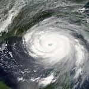

Hurricane Katrina
People Missing
As a result of the Category 5 tropical cyclone that occured in
August 2005, 705 people are still reported missing.
As a result of the Category 5 tropical cyclone that occured in
August 2005, 705 people are still reported missing.
The availability of such a resource would have reduced the number of
missing people significantly quicker.